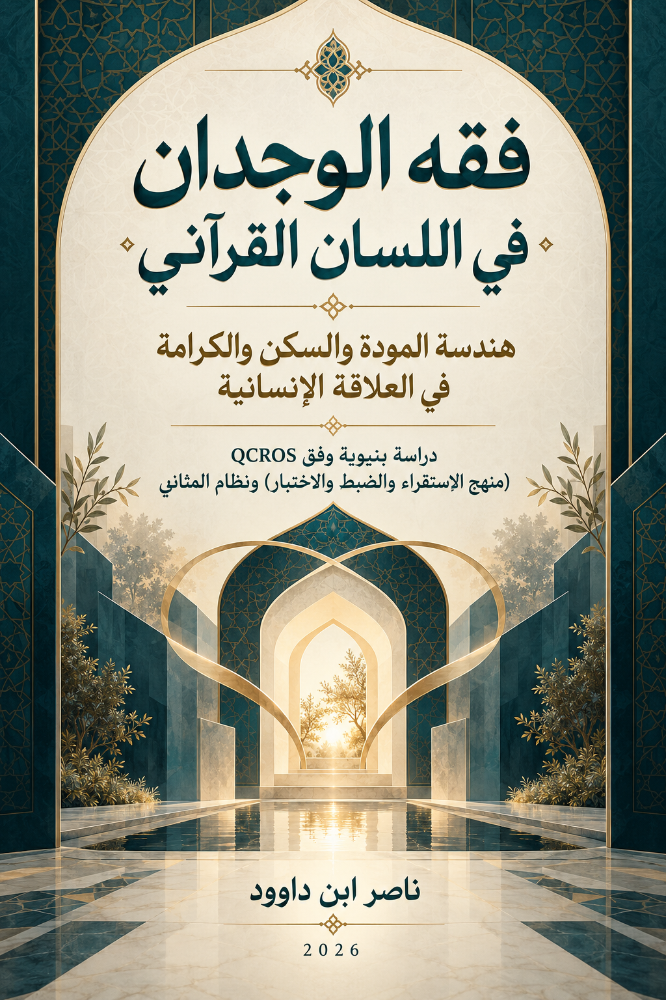

114. فقه الوجدان في اللسان القرآني

هندسة المودة والسكن والكرامة في العلاقة الإنسانية؛ دراسة بنيوية وفق QCROS ونظام المثاني، تعرض نموذج الكرامة الوجدانية بوصفه مرشحًا قابلًا للاختبار لا قانونًا قرآنيًا نهائيًا.
قراءة PDF داخل الموقع / Read the PDF on this website
جارٍ تجهيز القارئ… / Preparing the reader…